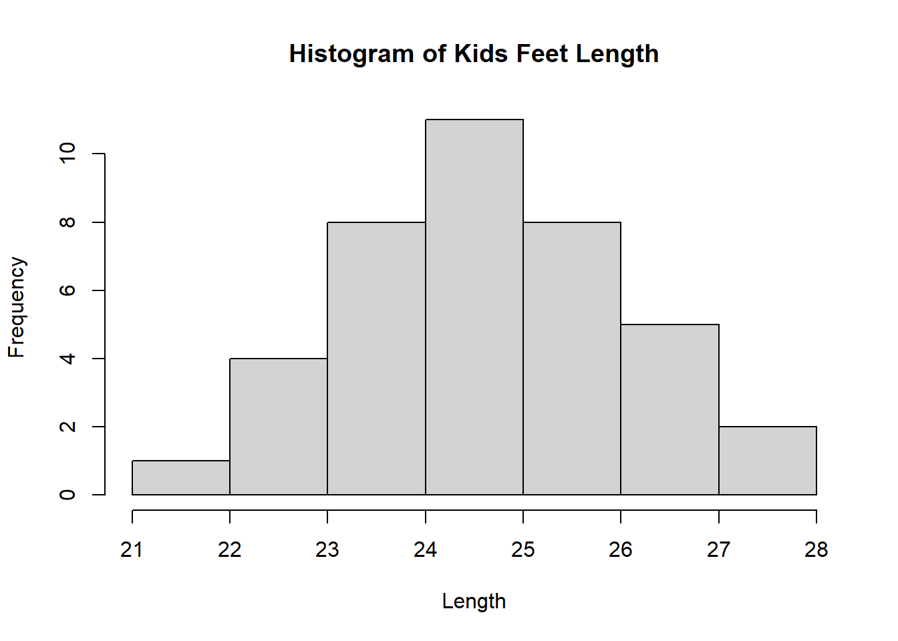

All Class Codes
Week 2 Day 1
Making Inference
Define Inference
Hypothesis Testing
Type I Error vs Type II Error – Examples (Flip flops vs medicine)
# Type I error: False positive (rejecting a true null hypothesis)
# Type II error: False negative (failing to reject a false null hypothesis)
# Example:
# Imagine a scenario where you are testing the effectiveness of a new medicine.
# - Null hypothesis (H0): The medicine has no effect.
# - Type I error: You conclude that the medicine is effective when it actually isn't.
# This can lead to unnecessary side effects and costs.
# - Type II error: You conclude that the medicine is not effective when it actually is.
# This means a useful treatment is rejected, possibly harming patients who need it.
# Another Example:
# Suppose you are testing if flip-flops are waterproof.
# - Null hypothesis (H0): Flip-flops are waterproof.
# - Type I error: You conclude that flip-flops are not waterproof when they actually are.
# - Type II error: You conclude that flip-flops are waterproof when they actually aren’t.Type I Error and Level of Significance
# Type I error = Level of significance = 1 – level of confidence
# The significance level (alpha) represents the probability of making a Type I error.
# Example: If the confidence level is 95%, then the significance level (alpha) is 0.05.
# This means there is a 5% chance of rejecting a true null hypothesis.Type II Errors and Power
Sufficient Evidence – Not Proof
# Hypothesis testing does not provide absolute proof but rather sufficient statistical evidence.
# - A statistically significant result suggests that an effect exists, but it does not confirm it with certainty.
# - External factors, assumptions, and sample limitations must be considered.
# - Scientific conclusions should be drawn cautiously based on the strength of the evidence.P-value Calculation
# P-value needs two things: a test statistic and a sampling distribution of the test statistic
# - The test statistic is calculated based on sample data (e.g., t-score, z-score, F-statistic).
# - The sampling distribution describes how the test statistic behaves under the null hypothesis.
# - The p-value measures how extreme the observed test statistic is, assuming the null hypothesis is true.
# - A small p-value suggests evidence against the null hypothesis, leading to potential rejection of H0.Peer Review Analysis
# 1) Go to the Analysis Menu and open Good Example Analysis
# 2) Summary of Student Peer Reviews for the Good Example Analysis
# 3) Identify at least one student who you would like feedback from
# 4) Identify at least one student that you would NOT like to give you feedback on future assignments.
# 5) Find an example of Good Specific Feedback
# To practice, locate at least one student feedback where the feedback
# is specific enough that if it were given to the wrong student
# that student wouldn't find it useful, but the right student would find it useful.
# 6) With Peers, identify things you should avoid doing
# 7) With Peers, identify principles that would make for a good critiqueData Exploration
Group 1 Analysis
Group 2 Analysis

Group 3 Analysis

Notes
Week 2 Day 2
Day 1
A) Take a few moments to knit your index.rmd file
B) Do the Good Graphics question in the quiz
Histograms (length)


Go through the four questions below for Question 3
Boxplots


Scatterplots


Go over the Stephanie analysis
Week 3
Day 1
A) Quantitative vs Categorical Data - KidsFeet
| Min. | 1st Qu. | Median | Mean | 3rd Qu. | Max. |
|---|---|---|---|---|---|
| 21.6 | 24 | 24.5 | 24.72 | 25.6 | 27.5 |
# Quantitative Y | Categorical X (2 Groups) - length by sex
tapply(KidsFeet$length, KidsFeet$sex, summary) %>%
pander()B:
Min. 1st Qu. Median Mean 3rd Qu. Max. 22.9 24.35 24.95 25.11 25.8 27.5 G:
Min. 1st Qu. Median Mean 3rd Qu. Max. 21.6 23.65 24.2 24.32 25.1 26.7
# Quantitative Y | Multiple Categorical X - length by sex and biggerfoot
tapply(KidsFeet$length, list(KidsFeet$sex, KidsFeet$biggerfoot), summary) %>%
pander()| L | R | |
|---|---|---|
| B | 24.20000, 24.60000, 25.20000, 25.43636, 26.10000, 27.10000 | 22.9, 23.9, 24.5, 24.7, 25.5, 27.5 |
| G | 22.90000, 24.10000, 24.50000, 24.77273, 26.00000, 26.70000 | 21.600, 23.325, 23.850, 23.700, 24.175, 25.500 |
# Quantitative Y | Quantitative X - length and width
cor(KidsFeet$length, KidsFeet$width) %>%
pander()0.6411
# The function cor(KidsFeet$length, KidsFeet$width) in R calculates the Pearson correlation
# coefficient between the length and width columns of the KidsFeet dataset, measuring the
# strength and direction of their linear relationship. A result close to 1 indicates a
# strong positive correlation (as foot length increases, width also increases), while a
# result near -1 suggests a strong negative correlation (as length increases, width
# decreases). A value around 0 implies no significant linear relationship between the two
# variables.# Quantitative Y | Multiple X - length and width and sex
lm(length ~ width + sex, data = KidsFeet) %>%
pander()| Estimate | Std. Error | t value | Pr(>|t|) | |
|---|---|---|---|---|
| (Intercept) | 10.36 | 3.323 | 3.118 | 0.003575 |
| width | 1.604 | 0.3607 | 4.447 | 8.015e-05 |
| sexG | -0.1329 | 0.363 | -0.3661 | 0.7164 |
# Binomial Y | Quantitative X - sex and length - opposite x and y
glm(sex ~ length, data = KidsFeet, family = binomial) %>%
pander()| Estimate | Std. Error | z value | Pr(>|z|) | |
|---|---|---|---|---|
| (Intercept) | 12.49 | 6.966 | 1.792 | 0.07306 |
| length | -0.5074 | 0.2818 | -1.801 | 0.07174 |
B - Summary Statistics
C - Visualization
# Histogram - quantitative
hist(KidsFeet$length, main="Histogram of Kids Feet Length", xlab="Length")
# Boxplot - quantitative
boxplot(KidsFeet$length, main="Boxplot of Kids Feet Length", xlab="Length")
# Dot plot - quantitative
stripchart(KidsFeet$length, method = "jitter", pch = 19, col = "blue", main = "Dot Plot of Kids Feet Length")


D - Answering Specific Questions
| B | G |
|---|---|
| 20 | 19 |

# What is the average length of feet in the KidsFeet dataset?
favstats(KidsFeet$length) %>% pander()| min | Q1 | median | Q3 | max | mean | sd | n | missing |
|---|---|---|---|---|---|---|---|---|
| 21.6 | 24 | 24.5 | 25.6 | 27.5 | 24.72 | 1.318 | 39 | 0 |

| sex | min | Q1 | median | Q3 | max | mean | sd | n | missing |
|---|---|---|---|---|---|---|---|---|---|
| B | 22.9 | 24.35 | 24.95 | 25.8 | 27.5 | 25.11 | 1.217 | 20 | 0 |
| G | 21.6 | 23.65 | 24.2 | 25.1 | 26.7 | 24.32 | 1.33 | 19 | 0 |
boxplot(length~sex, data=KidsFeet, main="Comparing Length of Feet Across Gender",
xlab="Gender", ylab="Length of Foot", col=c("blue","pink"))
# Are there certain months of the year associated with longer feet?
favstats(length~birthmonth, data=KidsFeet) %>%
pander()| birthmonth | min | Q1 | median | Q3 | max | mean | sd | n | missing |
|---|---|---|---|---|---|---|---|---|---|
| 1 | 21.6 | 22.5 | 23.4 | 24.3 | 25.2 | 23.4 | 2.546 | 2 | 0 |
| 2 | 25.1 | 25.6 | 26.1 | 26.1 | 26.1 | 25.77 | 0.5774 | 3 | 0 |
| 3 | 22.9 | 24.65 | 25.15 | 25.77 | 27 | 25.14 | 1.218 | 8 | 0 |
| 4 | 23.6 | 23.65 | 23.7 | 24.2 | 24.7 | 24 | 0.6083 | 3 | 0 |
| 5 | 23.6 | 23.8 | 24 | 24.2 | 24.4 | 24 | 0.5657 | 2 | 0 |
| 6 | 23 | 23.75 | 24 | 24.68 | 26.7 | 24.43 | 1.588 | 4 | 0 |
| 7 | 22.5 | 23.45 | 24.4 | 25.75 | 27.1 | 24.67 | 2.312 | 3 | 0 |
| 8 | 23.9 | 24.45 | 25 | 25.55 | 26.1 | 25 | 1.556 | 2 | 0 |
| 9 | 22.9 | 24 | 24.5 | 24.6 | 27.5 | 24.7 | 1.704 | 5 | 0 |
| 10 | 24.2 | 24.5 | 24.8 | 25.1 | 25.4 | 24.8 | 0.8485 | 2 | 0 |
| 11 | 24.2 | 24.65 | 25.1 | 25.55 | 26 | 25.1 | 1.273 | 2 | 0 |
| 12 | 24 | 24.25 | 24.5 | 25 | 25.5 | 24.67 | 0.7638 | 3 | 0 |
boxplot(length~birthmonth, data=KidsFeet, col="navy",
xlab = "Numerical Birth Month", ylab="Feet Length")
# Is there a relationship between foot length and width?
cor(KidsFeet$length, KidsFeet$width) %>%
pander()0.6411
plot(length~width, data=KidsFeet, main="Relationship Between Length and Width of Kids Feet",
xlab="Width of Foot", ylab = "Length of Foot")
Week 4 Day 1
Making Inference
Define Inference
Hypothesis Testing
Type I vs. Type II Errors – Example: Flip Flops vs. Medicine
Type I Error (FALSE POSITIVE)
- Rejecting a true null hypothesis.
- It is the probability of rejecting the null hypothesis when you should have accepted it.
- Example: A medical test incorrectly detects a disease in a healthy person.
Type II Error (FALSE NEGATIVE)
- Failing to reject a false null hypothesis.
- It is the probability of accepting the null hypothesis when you should have rejected it.
- Example: A medical test fails to detect a disease in a sick person.
In decision-making,
- Type I errors lead to UNNECESSARY ACTIONS.
- Type II errors result in MISSED DETECTIONS.
Remembering Type I and II Errors:
Hypothesis Definitions:
- Null Hypothesis (H₀): There is no fire.
- Alternative Hypothesis (H₁): There is a fire.
Type I Error (FALSE POSITIVE) – “False Alarm”
- You reject the null hypothesis when you should have accepted it.
- Example: The fire alarm goes off, but there’s no actual fire.
- Think: Overreaction—detecting something that isn’t actually there.
Type II Error (FALSE NEGATIVE) – “Missed Detection”
- You accept the null hypothesis when you should have rejected it.
- Example: You miss detecting a real fire because the alarm didn’t go off.
- Think: Underreaction—failing to detect something that actually exists.
| Decision | Accept H₀ (No Fire) | Reject H₀ (Fire Alarm Goes Off) |
|---|---|---|
| H₀ is True (No Fire) | ✅ Correct Decision | ❌ Type I Error (False Alarm) |
| H₀ is False (There is a Fire) | ❌ Type II Error (Missed Detection) | ✅ Correct Decision |
Type I Error and Significance Level
- Type I Error = Significance Level (α) = 1 – Confidence Level
- The significance level (α) is the probability of making a Type I error.
- A lower α reduces the chance of rejecting a true null hypothesis.
Example:
- A 95% confidence level means a 0.05 significance level (α = 0.05).
- This means there is a 5% chance of incorrectly rejecting a true null hypothesis.
Type II Errors and Power
- Type II error: Probability of accepting the null hypothesis when you should have rejected it.
- Power of a test: Probability of correctly rejecting a false null hypothesis.
- Power = 1 - Probability of a Type II error.
- A higher power means a lower chance of making a Type II error.
- Increasing sample size, effect size, or significance level can improve power.
Example:
- Suppose a new drug is being tested for effectiveness against a disease.
- H₀: The drug has no effect.
- H₁: The drug is effective.
- A Type II error occurs if we conclude the drug is ineffective (accept H₀)
when it actually works (H₁ is true). - The power of the test is the probability of correctly detecting the drug’s effectiveness.
- If power is 80%, it means there’s a 20% chance of failing to detect a real effect (Type II error).
Sufficient Evidence ≠ Proof
- Hypothesis testing does not prove anything.
- It only provides sufficient evidence to support or reject a hypothesis.
P-Value Requires Two Components:
- A test statistic
- The sampling distribution of the test statistic
Parametric Distributions
The four main parametric distributions used in statistical tests:
- Normal distribution
- t-distribution
- Chi-square distribution
- F-distribution
These distributions are used in hypothesis testing and confidence interval estimation in STAT 221.
Parametric vs. Non-Parametric Methods
- Parametric methods assume that data follows a specific distribution (e.g., normal distribution).
- Non-parametric methods do not require a specific distribution, making them more flexible.
- When to use non-parametric tests:
- When the assumptions for parametric tests (e.g., normality) are not met.
- When working with small sample sizes or ordinal data.
- When the assumptions for parametric tests (e.g., normality) are not met.
- Non-parametric tests can sometimes be more powerful than parametric tests when assumptions are violated.
Example of a t-Test
# Conducting a one-sample t-test
t.test(KidsFeet$length, mu=25.1, alternative="two.sided", conf.level=0.95) %>%
pander()| Test statistic | df | P value | Alternative hypothesis | mean of x |
|---|---|---|---|---|
| -1.787 | 38 | 0.082 | two.sided | 24.72 |
| Test statistic | df | P value | Alternative hypothesis | mean of x |
|---|---|---|---|---|
| -1.787 | 38 | 0.041 * | less | 24.72 |
Two-Sample t-Test
Welch Two Sample t-test
data: length by sex
t = 1.9174, df = 36.275, p-value = 0.03154
alternative hypothesis: true difference in means between group B and group G is greater than 0
95 percent confidence interval:
0.09382502 Inf
sample estimates:
mean in group B mean in group G
25.10500 24.32105 Making Inference
Define Inference
Hypothesis Testing
Parametric Distributions
Parametric vs Non-Parametric Methods
Example of a One-Sample t-Test
| Test statistic | df | P value | Alternative hypothesis | mean of x |
|---|---|---|---|---|
| -15.53 | 38 | 4.806e-18 * * * | two.sided | 24.72 |
Example of a Paired t-Test
t.test(KidsFeet3$length, KidsFeet3$width3, mu=0, paired=TRUE,
alternative="two.sided", conf.level=0.95)
Paired t-test
data: KidsFeet3$length and KidsFeet3$width3
t = -11.529, df = 38, p-value = 5.668e-14
alternative hypothesis: true mean difference is not equal to 0
95 percent confidence interval:
-2.649596 -1.858096
sample estimates:
mean difference
-2.253846 Example of an Independent Samples t-Test
Welch Two Sample t-test
data: length by sex
t = 1.9174, df = 36.275, p-value = 0.06308
alternative hypothesis: true difference in means between group B and group G is not equal to 0
95 percent confidence interval:
-0.04502067 1.61291541
sample estimates:
mean in group B mean in group G
25.10500 24.32105 Checking Requirements


Graphics


Numerical Summaries
| min | Q1 | median | Q3 | max | mean | sd | n | missing |
|---|---|---|---|---|---|---|---|---|
| 21.6 | 24 | 24.5 | 25.6 | 27.5 | 24.72 | 1.318 | 39 | 0 |
| min | Q1 | median | Q3 | max | mean | sd | n | missing |
|---|---|---|---|---|---|---|---|---|
| -4.6 | -3.35 | -2.1 | -1.25 | -3.553e-15 | -2.254 | 1.221 | 39 | 0 |
| sex | min | Q1 | median | Q3 | max | mean | sd | n | missing |
|---|---|---|---|---|---|---|---|---|---|
| B | 22.9 | 24.35 | 24.95 | 25.8 | 27.5 | 25.11 | 1.217 | 20 | 0 |
| G | 21.6 | 23.65 | 24.2 | 25.1 | 26.7 | 24.32 | 1.33 | 19 | 0 |
\[ H_0: \mu = 10 \\ \]
\[ H_a: \mu \neq 10 \]